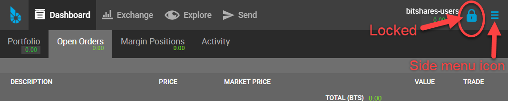

2. Create a BitShares Wallet¶
Table of Contents
2.1. Terminology¶
In this section, we want to describe Terminologies and guide you to create and register your BitShares Account.
Wallet
Wallets interacts with the blockchain to process accounts and funds functionalities. Users register to create a single wallet. The single wallet can carry many accounts. Users who have a lifetime membership (LTM) can register multiple accounts in parallel; all of them are stored in a single wallet. Also, users can create multiple wallets to organize their accounts properly.
Accounts
In BitShares, you can create own unique account name, so, you can remember easily. And you will use the account name to communicate (e.g. Send fund) with other BitShares account users (BTS Holders) like an email address. The advantage of using account name is that people can identify you by using a readable and memorable word instead of cryptographic addresses.
Each user has at least one account that can be used to interact with the blockchain. The account can be seen as a single banking account with an individual balance, transaction history, etc. Since these accounts are registered on the blockchain and are open to the public, we recommend to pick a pseudonym to achieve some privacy.
Keys
Keys refer to the cryptography used to secure access to your account and funds. It is of importance to prevent others from gaining access to these keys.
BitShares has owner, active and memo keys. And each key has public key and private key. It’s important to know that Owner permission has administrative powers over the whole account. Active Permission is considered as an “online” permission that allows to access funds and some account settings.
2.2. Light wallet or Web wallet?¶
Before we create a wallet, let’s check what type of wallet you can have as your BitShares wallet. Quick check the below chart.

Did you find out which type of wallet you want to have?
- If you want to install Light Wallet (BitShares UI), download BitShares UI Releases file and install it to your machine.
- This does not mean you will have a Local wallet.
- If you want to use Web Wallet, go to this link (https://wallet.bitshares.org).
2.3. Create an Account¶
In this section, you will create a Cloud wallet.
We use the term Cloud Wallet, but technically nothing is stored in the cloud. We call the Cloud Wallet because you can use your credentials (username and password) from any web browser at any time to gain access to your account.
Welcome BitShares - Create Account & Login form

2.3.1. Steps¶
- 1.Click [CREATE ACCOUNT]
- 2.Type in [ACCOUNT NAME]. You can create your unique BitShares account name.
- 3.Set a password. Copy and use a GENERATED PASSWORD
- 4.Type or paste your password to confirm.
- 5.Check the check boxes. Make sure you read before you check!
- 6.Click [CREATE ACCOUNT]

Before you submit, check your password one more time if you saved the correct one.
ONLY you can open your wallet again. No one can help. Do not lose it!
- 7.Click [SHOW ME MY PASSWORD] and double check if you have a correct password.
- 8.Click [OK,TAKE ME TO THE DASHBOARD]

- Click the top menu [Dashbord] if it did not open.

Now, you have a BitShares Cloud Wallet. Before you fund to your account, let’s login to make sure if you have a correct password.
2.4. Login¶
Click a Locked Key icon in the top right corner to open a login form.
{kind=link}
2.4.1. Cloud Wallet Login form¶
If you followed the above steps to create a BitShares account, you have a Cloud Wallet as a default wallet.
On the Login form, you can see which wallet Login form for. (i.e., Login with: Account name (cloud wallet))

If you logged in successfully, you would find a Unlocked Key.

2.5. Advanced: Create an Account¶
In this section, you will create a Local Wallet.
If you have a Cloud Wallet, you can access your wallet from any browsers. However, the Local Wallet, you can only access your funds from the same computer and web browser that you have used to register and create your account.
The Local wallet requires you to create a backup file to manage your account and funds. The backup file can be used to move

2.5.1. Steps¶
- 1.Click [advanced form]
- 2.Type in [ACCOUNT NAME]. You can create your unique BitShares account name.
- 3.Set a password. Create own strong password.
- 4.Type or paste your password to confirm.
- 5.Click [CREATE ACCOUNT]
> If this is yore first account, a faucet will pay the registration fee for you!

> Your Web Browser is your Wallet: Please read the information below.

- Click [CREATE BACKUP NOW]

It’s extremely important you to create a backup of your account and keep a safe place.
- Click [DOWNLOAD] to save a backup (.bin) file.

Congratulation, you’re ready!

2.6. BitShares Wallet Features¶
2.6.1. Quick Review Wallet Options¶

| Item name | note | |
|---|---|---|
| 1 | Dashboard | The Wallet Portfolio, Open Orders, Margin Positions, and Activity information |
| 2 | Exchange | BitShares Exchange, Trading information |
| 3 | Explore | BitShares Live Blockchain, Assets, Accounts, Witnesses members, Committee members, Markets, and Fee Schedule |
| 4 | Send | Opens a Send form. You can send funds to other BitShares Account Holders |
| 5 | A BitShares account name | A account name that the data shows on a Dashboard page |
| 6 | Key icon | By click, opens a login form. Locked/Unlocked Key icon shows if you’ve logged in the account currently |
| 7 | Side Menu icon | Side Menu icon opens the wallet other menus in a dropdown list |
| 8 | Asset Total | Currently showing in a Dashboard Total Assets |
| 9 | BitShares Wallet Version | The Release Version of BitShares UI Wallet |
| 10 | Latency | The delay of Network connection |
| 11 | Server Node name | A server node name that you are connecting |
2.6.1.1. Dashboard¶

Dashboard Tabs
| Tab name | note |
|---|---|
| Portfolio | Your Assets list. You can filter the assets and hide some assets if you don’t need to watch. |
| Open Orders | |
| Margin Positions | |
| Activity | Show your all transactions. (i.e., The below shows a type of transactions to choose from.) |
Activity - Filters